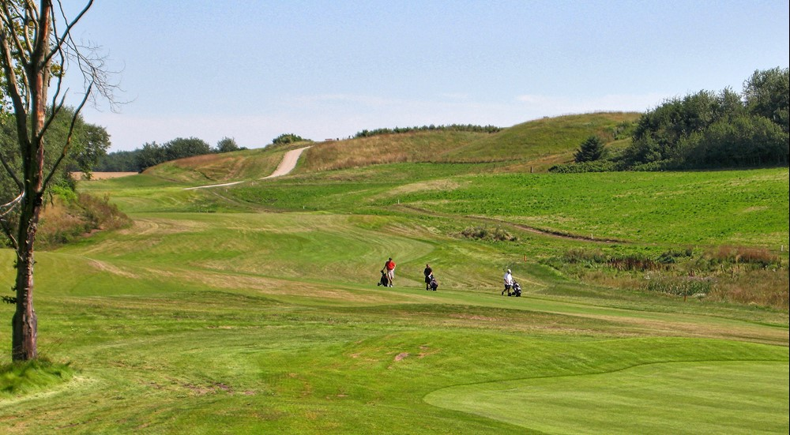

Cooperations between golfclub & associations: Golf courses opens for diabled people

According to the Danish Handicap Association,
there is reliable research evidence that golf helps disabled people with both balance and musculature.
(ARCHIVE PHOTO: FRANK UNDALL)
Smørum GolfClub has started a rehabilitations project in cooperation with serveral disability associations. This project is called
"Rehab golf"
The target audience is severely disabled people who yearn for golf, but who, due to their physical and cognitive disability,
cannot manage on their own under normal conditions in a golf club or on a golf course.
It is primarily expected to address people with paralysis after blood clots, strokes, or accidents.
Rehab Golf is also offered for citizens with diagnoses such as severe arthritis, sclerosis, diabetes, and mild cerebral palsy.
30-50 users
Rehab Golf is expected to start in March next year, and it will be done in collaboration between
Smørum Golf Club and a number of associations: Hjerneskadeforeningen, Hjernesagen, Parasport Danmark, Scleroseforeningen, Patient &
Ulykkesforeningen, Gigtforeningen & Dansk Handicap Forbund.
“We are very proud to be a part of this new offer” says Keld Østergaard, director of Smørum Golfklub.
The offer requires volunteers to help the participants on their way, and they have already signed up in large numbers,
he says. Smørum Golfklub has been selected to cover a larger area, as the club is the largest of its kind in the region, and
the hope is that 30-50 will use Rehab Golf.
Helpers more than anything else
The Danish Handicap Association has great expectations for the initiative,
which other major golf clubs in the country have been attached to.
"There is a large number of research that shows that golf is a more rehabilitative sport than so much else.
It helps both balance and muscles", says Jens Bouet, director of Denmarks Disability Association.
For Keld Østergaard, it is also about the fact that there are players who may be able to continue longer with the sport
than they otherwise would.
"Golf players are generally getting older, just like the rest of society,
and it is not certain that you can continue to complete 18 holes. But they still want to keep coming to the club.”
Donate equipment
In a letter to the members, it is stated that "the goal is, of course, to be able to retain existing golfers, and perhaps
attract new ones after they have had a debilitating handicap, as well as to retrain them to a reasonable golf handicap,
so that they can once again play 9-18 holes in same pace as healthy.”
Members have also been encouraged to donate old golf equipment to the cause.
Rehab Golf will also include a number of social initiatives,
and in addition to disability organizations with members who have physical impairments,
the project is also supported by the National Association of Municipalities, DIF and DGU.